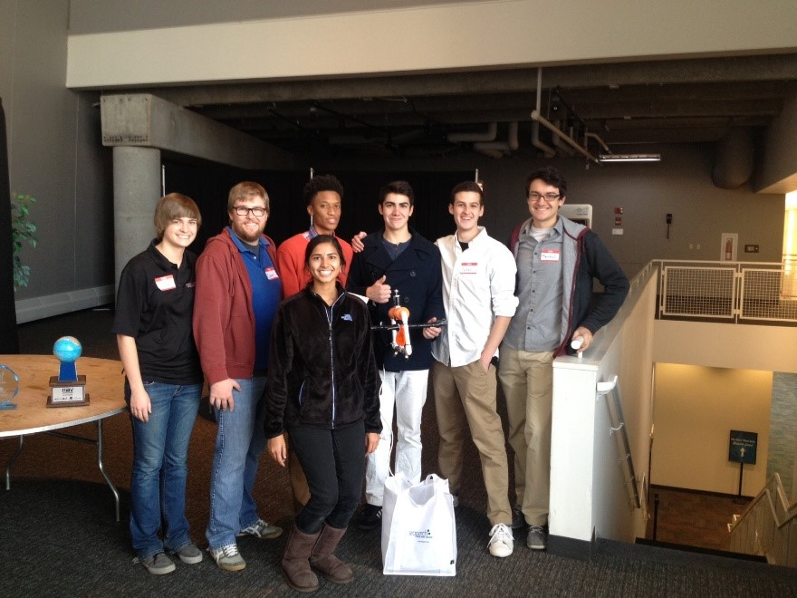
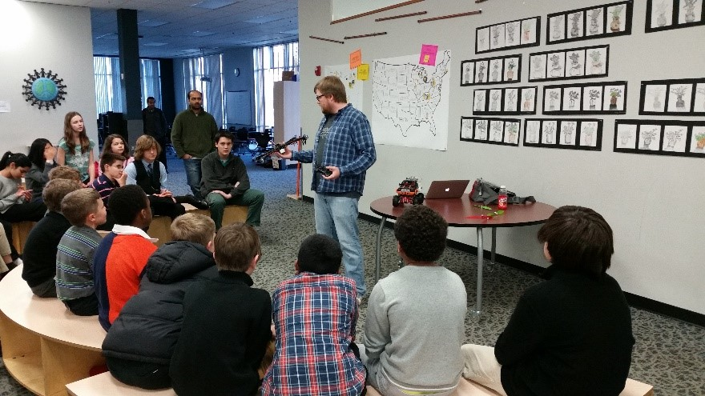
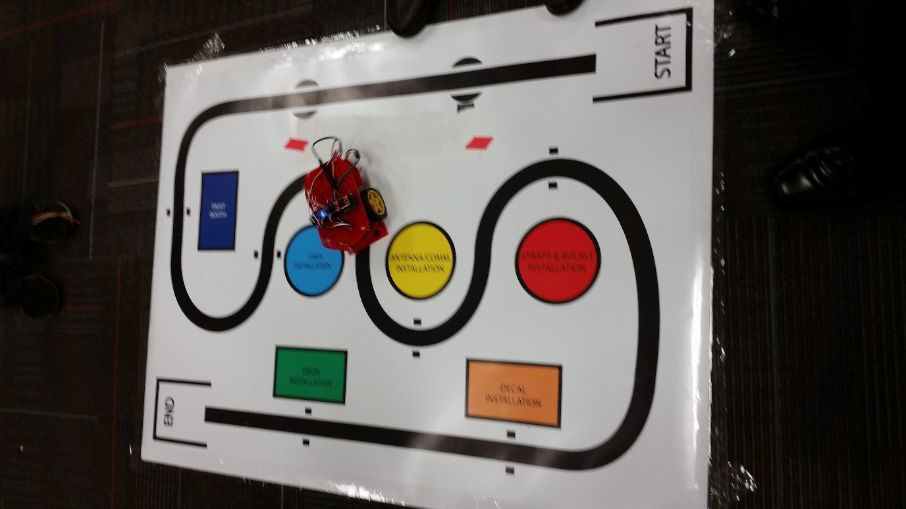

Team
History
The Underwater Robotics Team was established as a new student organization at The Ohio State University in the fall of 2010. Former team president, Emily Gyde, gathered support from a handful of young Ohio State students to launch a new project team within the College of Engineering. The team’s preliminary focus was solely the design of ROVs. Given the group’s composition of primarily mechanical engineering majors, its narrow focus best fit the team’s capabilities.
During its first year, the team was extremely limited given its tight budget. Although, the team did construct an ROV consisting of a PVC frame and bilge pumps, the primary focus became the acquisition of various resources to allow for the success of the team. This involved finding a workspace, advisors, and building community relationships. The team also began incorporating course content into the design via the use of SolidWorks.
These relationships became vital during the team’s second year where they constructed a carbon fiber chassis ROV. In doing so, the Underwater Robotics Team gained its first introduction to machining and composites. This project involved computer numerical control (CNC) machining aluminum molds for the carbon fiber to take shape. The 2011-2012 ROV was constructed with much help from the Ohio State Buckeye Bullet team. The design also had various aluminum blocks meant for interfacing the external wiring of the ROV (such as the wires for the thrusters and claw). Furthermore, an electrical engineering major in the Underwater Robotics Team, took it upon himself to construct a circuit board to control the vehicle.
The team took a major step forward by learning much about both the mechanical design aspects and the electrical design aspects of a ROV. However this design suffered from many flaws. Its large cross-sectional area in the altitude directions generated much drag and thus the ROV was unable to adjust its vertical position. The electrical board generated a lot of heat which the carbon fiber chassis could not dissipate causing it to overheat. The chassis itself consisted of two identical carbon fiber pieces where mating surfaces were bolted together. These surfaces were not flat enough for sealing applications, and thus the ROV leaked in water. These setbacks, though disappointing, provided the team with a great deal to learn from.
In the third year, the team finally accomplished what it had sought to do for the two previous years – compete in the Marine Advanced Technology Education (MATE) International ROV Competition. The design consisted of four thrusters and a cylindrical acrylic housing with aluminum end caps. It used an Arduino board as a means to controlling the thrusters. This design was possible from the funding provided by outside support which allowed for the purchasing of thrusters and a budget for materials, such as acetyl and aluminum.
As the team grew and gained more members, the diversity of the team grew to include more computer science and electrical engineering majors. Thus during its fourth year, the team decided to pursue an ROV with rotating thrusters. This required extensive programming and thorough controls analysis. These proved to be more challenging than expected, and the team was able to resolve the issues over the subsequent year to compete in the MATE International ROV Competition.
This design provided many exciting new challenges, such as the use of an inertial measurement unit (IMU) to control the orientation of the ROV, but more importantly gave a better understanding of the challenges which are more associated with autonomous underwater vehicles (AUVs).
Outreach
The Underwater Robotics Team represents a unique niche in the local community. The team engages in the community by participating in events such as the Ohio State Fair. As a participant in the Ohio State Fair, the Underwater Robotics Team designs and builds an exhibit to educate the local community about marine engineering. This involves smaller ROVs which guests can actively control and engage with in a small pool. The past year, electromagnets were attached to these smaller ROVs and guests were challenged to pick up painted washers from the bottom of the pool. This entertained many guests; both young and old.
Although not a quantifiable metric, the joy the exhibit brought to everyone was a rewarding experience, engaging teachers and encouraging them to incorporate the aspects of underwater vehicular design to their classroom. We have even engaged younger interested individuals with special needs to encourage them to pursue their underwater interests!
The team also participates in Ohio State camps hosted by Women in Engineering (WiE) as mentors and judges for the ROV camps to engage young adults in science, technology, engineering, and mathematics (STEM) fields. The team has a firm belief that STEM education is an important initiative. The Underwater Robotics Team hopes to continue to make a local impact on STEM education through both participating in community events and with proper funding, sponsoring technology demonstrations of the team’s ROVS as a part of OSGC’s larger initiative.
This year, the team participated in two events – one was a semester long high school project using Sea Perch kits. The teams had to navigate through an obstacle course, and the local competition. Shown in Figure 1 is a picture of the winning team with the collegiate mentors.
Figure 1: Winning Team in Sea Perch Challenge
The second activity was a year long activity at a local middle school. The team helped mentor middle school students via the use of Arduinos. During the first half of the school year, the primary focus was teaching the students the Arduino programming language. As shown in Figure 2, a member of the team is shown students a quadcopter – one of they many applications of robotics. During the second half of the year, the students were given the task of designing and programming a line following robot. Figure 3, shows an example of the vehicle on the competition track.
Figure 2: Mentor Explaining How a Quadcopter Works
Figure 3: Line Following Robot
The team has volunteered at multiple STEM events hosted by the PAST Foundation. The events are ROV competitions for high school students in the Columbus area and require the creation of a tethered underwater vehicle, technical documentation, and a formal presentation. Team members have been involved with assisting in overall event flow, acting as judges for presentations and documentation, and supporting teams waiting for the run. In preparation for one of PAST’s competitions team members also volunteered as mentors for an engineering class at METRO high school, where volunteers helped teams troubleshoot issues and gave design advice.
For future STEM outreach activities the team has created a small demonstration robot, termed a STEMbot. This vehicle will be used in classrooms and workshops to show people how great the STEM field is and hopefully inspire young minds to pursue science and engineering careers.